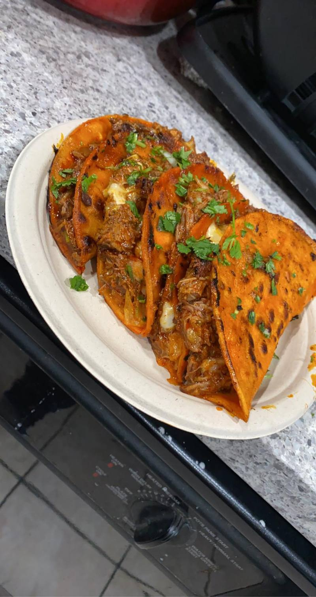
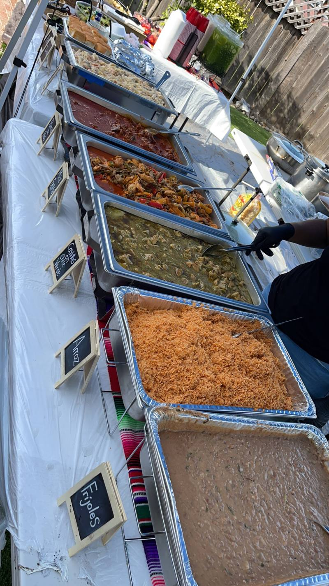
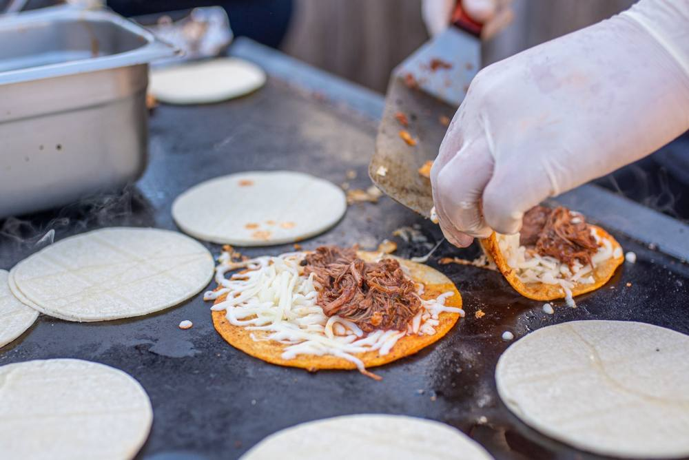
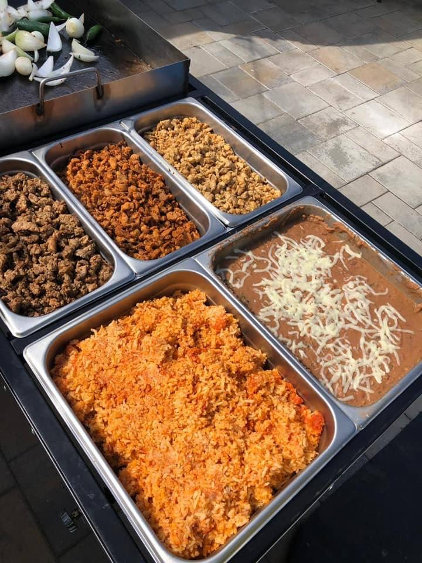
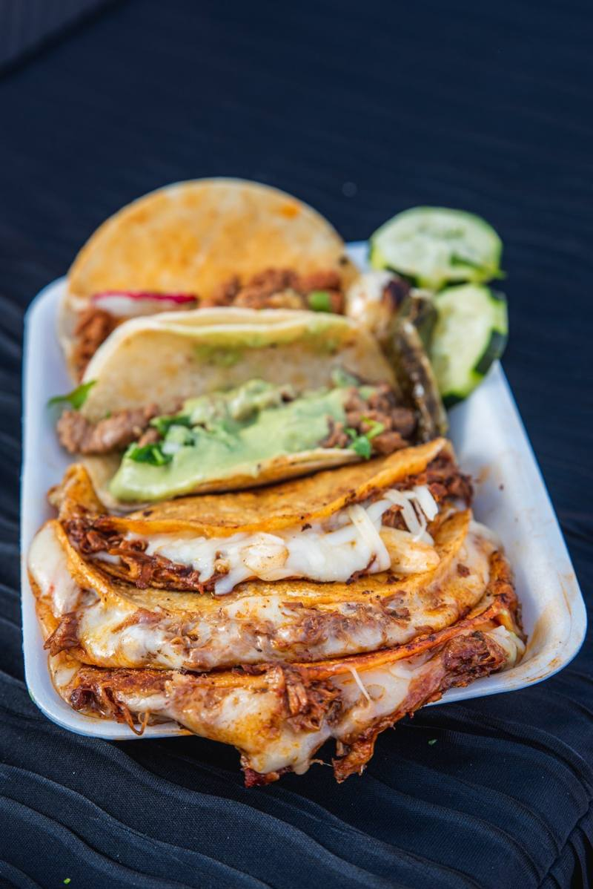
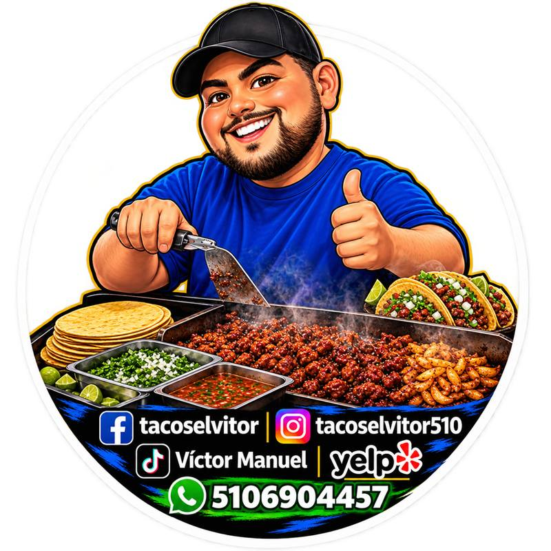

Taquizas y buffet con plancha en vivo para quinceañeras, bautizos, cumpleaños, iglesias, escuelas y empresas. Nosotros cocinamos y servimos. Tú disfrutas tu fiesta.Taco catering and buffets with a live griddle for quinceañeras, baptisms, birthdays, churches, schools and companies. We cook and serve. You enjoy your party.
Calculas y recalculas cuántos van a comer, y el miedo de que falte no se va.You recalculate how many will eat, and the fear of running short never leaves.
Proveedores que llegan tarde o no contestan, con tus invitados esperando.Vendors who arrive late or stop answering, with your guests waiting.
Eres el anfitrión pero pasas la fiesta cargando charolas, no abrazando a tu gente.You’re the host, but you spend the party carrying trays instead of hugging your people.
❌ “Un catering es carísimo.”❌ “Catering is crazy expensive.”
✔ Desde $20 por persona con comida, agua fresca, salsas y desechables incluidos.✔ From $20 per person with food, agua fresca, salsas and disposables included.
❌ “Pedir comida a un restaurante es más fácil.”❌ “Ordering from a restaurant is easier.”
✔ Llega fría o a medias y alguien tiene que servirla. Nosotros cocinamos y servimos en tu evento.✔ It arrives cold or incomplete and someone has to serve it. We cook and serve at your event.
❌ “Con tacos normales basta.”❌ “Regular tacos are enough.”
✔ La birria hace que la gente hable de tu fiesta semanas después.✔ Birria is what gets people talking about your party for weeks.

Llegamos a tiempo, montamos rápido, cocinamos en plancha frente a tus invitados y nos quedamos a servir. Siempre caliente. Al final dejamos limpio.We arrive on time, set up quickly, cook on the griddle in front of your guests and stay to serve. Always hot. We leave it clean.
La birria es nuestra especialidad. Pregunta por el buffet de birria o por las quesabirrias. Una pareja la probó en su degustación y cambió el menú de su boda ahí mismo.Birria is our specialty. Ask about the birria buffet or quesabirrias. A couple tasted it at their tasting and changed their wedding menu on the spot.
4 por persona: asada, pollo y al pastor, con cebolla, cilantro y limones.4 per person: steak, chicken and al pastor, with onion, cilantro and limes.
Roja y verde. Según paquete: guacamole, cebollas y jalapeños asados.Red and green. By package: guacamole, grilled onions and jalapeños.
100% natural: horchata (la favorita), pepino con limón, piña, sandía, melón, jamaica, tamarindo y limonada.100% natural: horchata (the favorite), cucumber-lime, pineapple, watermelon, melon, hibiscus, tamarind and lemonade.
Cocinamos, servimos en desechables y limpiamos. Sin costo extra.We cook, serve on disposables and clean up. No extra cost.




Reseñas reales de Yelp, incluidas de usuarios Elite.Real Yelp reviews, including Elite members.
“Alimentaron a unos 100 invitados y nos sobró para varios días. Llegaron a tiempo y dejaron todo limpio.”“They fed ~100 guests with leftovers for days. On time, and they cleaned up nicely.”
Annie A. · Fremont · Yelp Elite
“Cubrió el almuerzo de nuestra boda para 80 personas. La birria estaba tierna y llena de sabor.”“He catered our wedding lunch for 80. The birria was so tender and flavorful.”
Angela T. · Oakland · Yelp Elite
“La comida estaba increíble. Mi único arrepentimiento es no haber comido más.”“The food was amazing! My only regret is that I couldn’t have eaten more.”
Ted A. · Alameda
Leer todas las reseñas en YelpRead all reviews on Yelp

Sin intermediarios. Desde 2015, más de 100 eventos. Pregunta por una degustación para elegir tu menú.No middlemen. Since 2015, 100+ events. Ask about a tasting to pick your menu.
Toca la imagen para ampliarla.Tap the image to enlarge.
Precio por persona. Mínimo 25 personas. Birria y buffet de birria: pregunta por tu cotización.Price per person. 25-guest minimum. Birria and birria buffet: ask for your quote.
Elige tu paquete y calcula tu total al instante. ¿Tu ciudad no está en la lista? Elige “Otra ciudad” para calcular solo la comida, sin el costo de gasolina, y escríbenos para una cotización precisa.Choose your package and calculate your total instantly. Your city isn’t listed? Pick “Other city” to calculate the food only, without the fuel cost, and message us for an exact quote.
La entrega cubre la gasolina para llevar la plancha y el equipo hasta ti (en Hayward es gratis). Tu cotización final se confirma por mensaje.Delivery covers fuel to bring the griddle and equipment to you (free in Hayward). Your final quote is confirmed by message.
Reserva con $100 de anticipo. Si cancelas 5 días o más antes, te devolvemos $50. Con 4 días o menos no hay reembolso, porque ya compramos y preparamos todo para tu evento. También puedes dejar el anticipo como crédito para reprogramar.Book with a $100 deposit. Cancel 5+ days ahead and we refund $50. With 4 days or less there’s no refund, because we’ve already bought and prepped everything for your event. You can also keep the deposit as credit to reschedule.
💬 Apartar mi fecha por WhatsAppBook my date on WhatsApp¿Prefieres otro medio?Prefer another way? SMS · TacoselVitor@outlook.com · (510) 690-4457
Mira la plancha en acción, la birria saliendo y fiestas reales de nuestros clientes. Revísa nuestras redes sociales.See the griddle in action, the birria coming off it and real parties from our clients. Check out our social media.
No. Tú pones una mesa para la comida; nosotros llevamos todo lo demás, cocinamos, servimos y limpiamos.No. You provide a table for the food; we bring everything else, cook, serve and clean up.
Siempre caliente: cocinamos en tu evento y la mantenemos en charolas calientes mientras servimos.Always hot: we cook at your event and keep it in heated trays while we serve.
Cada paquete incluye 4 tacos por persona.Every package includes 4 tacos per person.
Mínimo una semana. En verano y en mayo y julio (graduaciones), mientras antes mejor.At least one week. In summer and in May and July (graduations), the earlier the better.
Sí: quesabirrias, nachos, nopales, pupusas, lengua, tripa, carnitas, chorizo, camarón y más. Escríbenos tu idea.Yes: quesabirrias, nachos, grilled cactus, pupusas, beef tongue, tripe, carnitas, chorizo, shrimp and more. Message us your idea.